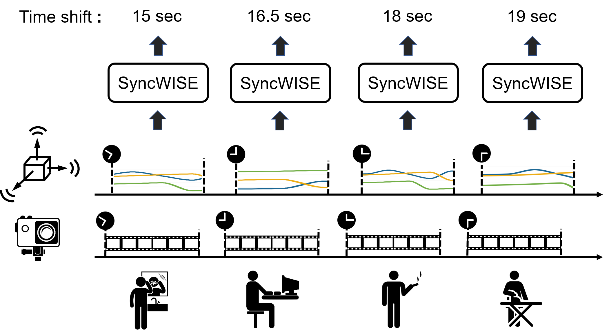
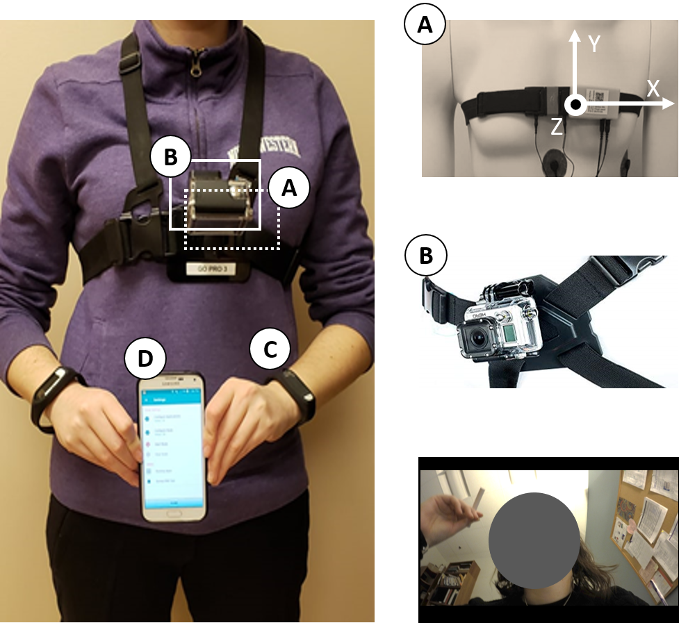
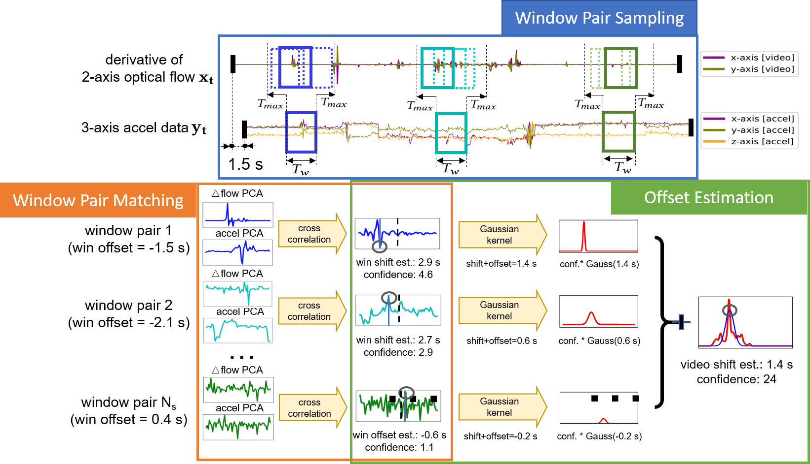
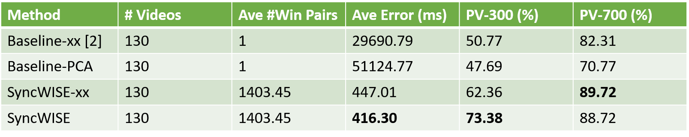
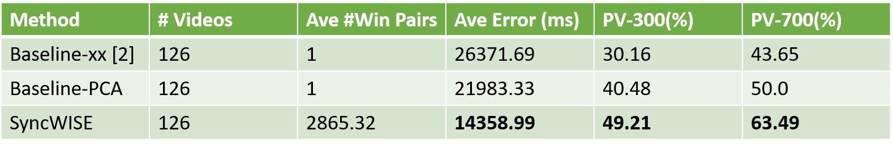

Our work provides a flexible, general purpose solution for synchronizing wearable cameras with other mobile sensors that can be applied to in-the-wild data, does not impose any additional burden on participants, and is fully-automated

Illustration of input and output in our SyncWISE system.
Abstract
The development and validation of computational models to detect daily human behaviors (e.g., eating, smoking, brushing) using wearable devices requires labeled data collected from the natural field environment, with tight time synchronization of the micro-behaviors (e.g., start/end times of hand-to-mouth gestures during a smoking puff or an eating gesture) and the associated labels. Video data is increasingly being used for such label collection. Unfortunately, wearable devices and video cameras with independent (and drifting) clocks make tight time synchronization challenging. To address this issue, we present the Window Induced Shift Estimation method for Synchronization (SyncWISE) approach. We demonstrate the feasibility and effectiveness of our method by synchronizing the timestamps of a wearable camera and wearable accelerometer from 163 videos representing 45.2 hours of data from 21 participants enrolled in a real-world smoking cessation study. Our approach shows significant improvement over the state-of-the-art, even in the presence of high data loss, achieving 90% synchronization accuracy given a synchronization tolerance of 700 milliseconds. Our method also achieves state-of-the-art synchronization performance on the CMU-MMAC dataset.
Dataset
Data was collected during a smoking cessation study, Sense2Stop. The S2S-Sync dataset is generated from Sense2Stop during the three-day pre-quit period in which subjects exhibited maintenance behavior (i.e. typical smoking patterns). The wearable devices worn by the participants included a GoPro video camera strapped to their chest, a chest-worn sensor suite comprising an accelerometer, electrocardiography (ECG) sensor and respiratory plethysmography (RIP) sensor, and a pair of wrist-worn devices with tri-axial accelerometers and gyroscopes on each wrist. Additionally, they were provided with a study-dedicated smartphone with data collection software installed. We focus our analysis on synchronizing between the chest-worn accelerometer and GoPro video camera.
[Download]

The wearable sensory platform.
Method Overview
Our approach to matching noisy video and accelerometry signals captured from mobile devices has three steps, window pair sampling, window pair matching and offset estimation. It selects high-quality windows of accelerometry data for matching, as a way to overcome the noise and missingness in this signal. Weighted kernel density estimation (wKDE) is used to combine noisy estimates of the shift produced from multiple accelerometry-video window pairs to obtain an accurate estimate.

SyncWISE Algorithm overview.
Experiment Results
We compare our method to baseline [2] on two datasets: our novel S2S-Sync dataset and the CMU-MMAC kitchen activities dataset [1].
Result on S2S-Sync Dataset for baseline-xx, baseline-PCA, SyncWISE-xx and SyncWISE (𝑇𝑤=10s, 𝑇𝑚𝑎𝑥 =5s, 𝑁𝑠=20) with random shift. The SyncWISE results are averaged over 30 runs. In each run, we generate a random number from [-3 sec, 3 sec] as the ground truth shift between videos and accelerometer data. Baseline results are based on a single run because it is not affected by different input shift and no randomization is involved in this algorithm.

- *-xx – select the 𝑥 component of both the accelerometry and camera acceleration features
- *-PCA – use the PCA-based approach to determine the 1D signals used for cross-correlation
- PV-n – Percentage of video clips which are synchronized to an offset error of less than 𝑛 ms
Final result on the CMU-MMAC Dataset for synchronization between wearable camera and right arm accelerometor using SyncWISE, Baseline-PCA and Baseline-xx (with 𝑇𝑤=60s, 𝑇𝑚𝑎𝑥 =60s, 𝑁𝑠=10).

Citation
Bibliography information of this work:
Yun C. Zhang, Shibo Zhang, Miao Liu, Elyse Daly, Samuel Battalio, Santosh Kumar, Bonnie Spring, James M. Rehg, and Nabil Alshurafa. 2020. SyncWISE: Window Induced Shift Estimation for Synchronization of Video and Accelerometry from Wearable Sensors. Proc. ACM Interact. Mob. Wearable Ubiquitous Technol. 4, 3, Article 107 (September 2020), 26 pages. https://doi.org/10.1145/3411824
@article{zhang2020syncwise,
author = {Zhang, Yun C. and Zhang, Shibo and Liu, Miao and Daly, Elyse and Battalio, Samuel and Kumar, Santosh and Spring, Bonnie and Rehg, James M. and Alshurafa, Nabil},
title = {SyncWISE: Window Induced Shift Estimation for Synchronization of Video and Accelerometry from Wearable Sensors},
year = {2020},
issue_date = {September 2020},
publisher = {Association for Computing Machinery},
address = {New York, NY, USA},
volume = {4},
number = {3},
url = {https://doi.org/10.1145/3411824},
doi = {10.1145/3411824},
journal = {Proc. ACM Interact. Mob. Wearable Ubiquitous Technol.},
month = sep,
articleno = {107},
numpages = {26},
keywords = {Video, Wearable Sensor, Wearable Camera, Automatic Synchronization, Temporal Drift, Accelerometry, Time Synchronization}
}
Contact
For questions about paper, please contact yzhang467 at gatech dot edu
References
- Fernando de la Torre, Jessica K. Hodgins, Javier Montano, and Sergio Valcarcel. 2009. Detailed Human Data Acquisition of Kitchen Activities: the CMU-Multimodal Activity Database (CMU-MMAC). In CHI 2009 Workshop. Developing Shared Home Behavior Datasets to
Advance HCI and Ubiquitous Computing Research.
- Lex Fridman, Daniel E Brown, William Angell, Irman Abdić, Bryan Reimer, and Hae Young Noh. 2016. Automated Synchronization of Driving Data using Vibration and Steering Events. Pattern Recognition Letters 75 (2016), 9–15.